Audio Player Loader
The native-Mac way to bulk-load your USB audio devices — no Windows, no emulation, nothing to install.
What this does: erases the USB audio players plugged into your Mac and loads your audio content onto all of them at once. You choose exactly which disks are erased, and you confirm before anything happens.
.DS_Store, ._*). The
script cleans up after itself and leaves your Mac's settings and your content folder exactly
as it found them.
Unzip the download to get load_content.sh. Then put that file
inside your content folder — the one that holds your numbered audio folders
(001 …, 002 …), exactly as shown below. The loader copies
whatever sits in its own folder onto the devices, so it has to live right
beside your audio.
(If someone handed you a ready-made folder, load_content.sh is already inside it
— just open that folder.)
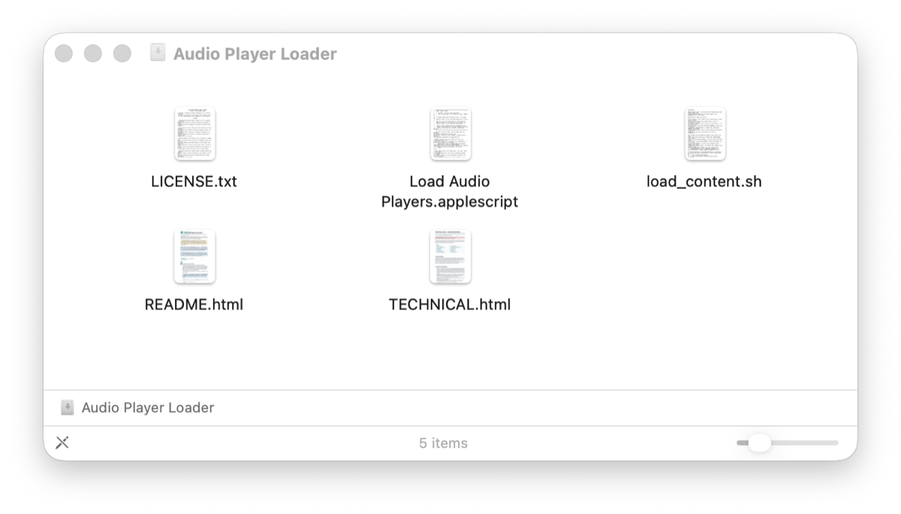
Plug in the USB hub with the devices to be loaded.
Press Cmd + Space, type terminal, and press
Return. (Terminal is a built-in Mac app. A small window opens.)
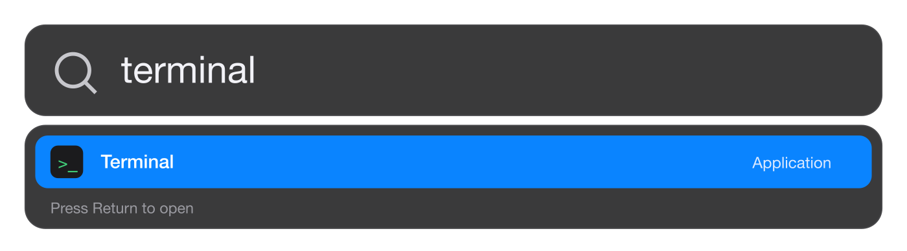
bash and a spaceIn the Terminal window, type the word bash followed by
one space. Do not press Return yet.
Drag the load_content.sh that is inside your content folder onto
the Terminal window and drop it — that exact copy, the one sitting beside your audio, is what
decides what gets loaded. Its location appears after the word bash.
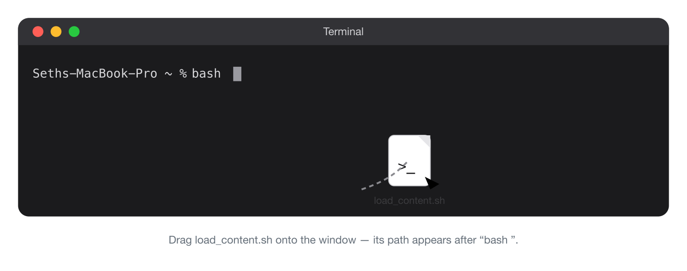
load_content.sh onto
Terminal's icon in the Dock (the row of app icons along the bottom of the
screen) — or onto its window thumbnail — and keep holding, don't let go. After
a second the Terminal window jumps to the front; now slide the file onto that window and release.
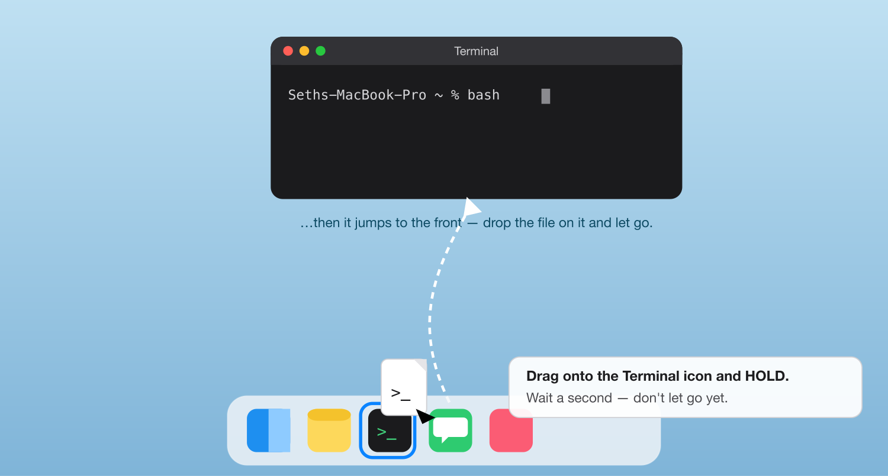
Click the Terminal window and press Return.
A box asks for the volume label — the name the devices will have. Click OK for the default (PLAYER), or type your own (letters and numbers, up to 11).
💡 Tip: use a new, unused name each batch — it makes the after-the-run device check (see Verify every device, below) reliable.
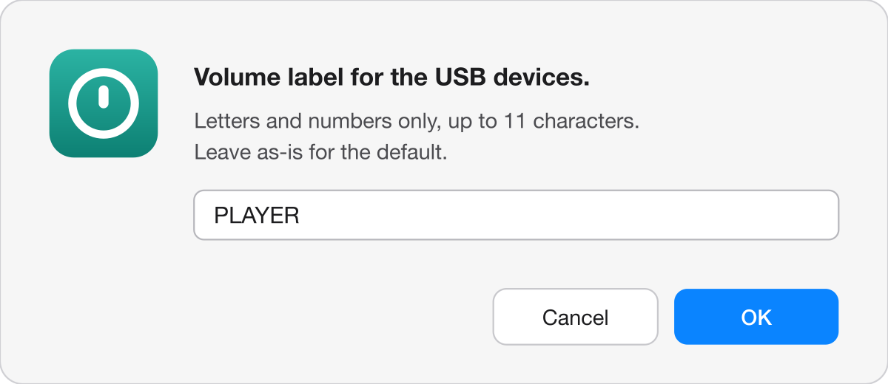
A message tells you how many external disks were found, with buttons Cancel / Show in Finder / Choose disks…. "Show in Finder" opens the drives so you can peek at what's on them; the message then comes back. Click Choose disks… to continue.
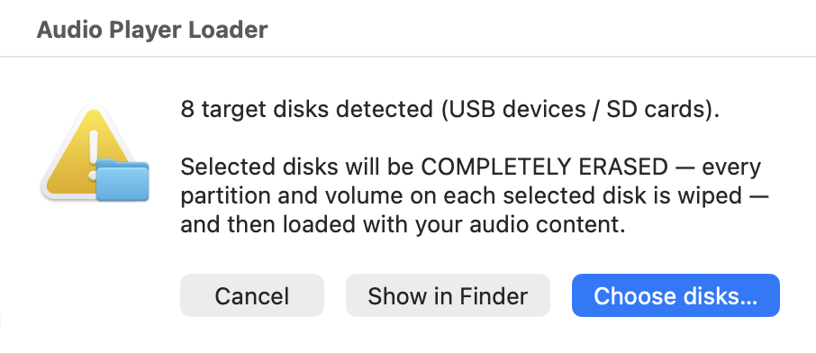
A list appears. Each row is one DISK, shown with its size and the names of all volumes on it. All disks start selected. If you see a disk you want to keep (for example a backup drive), hold Cmd and click that row to deselect it. Then click Continue….
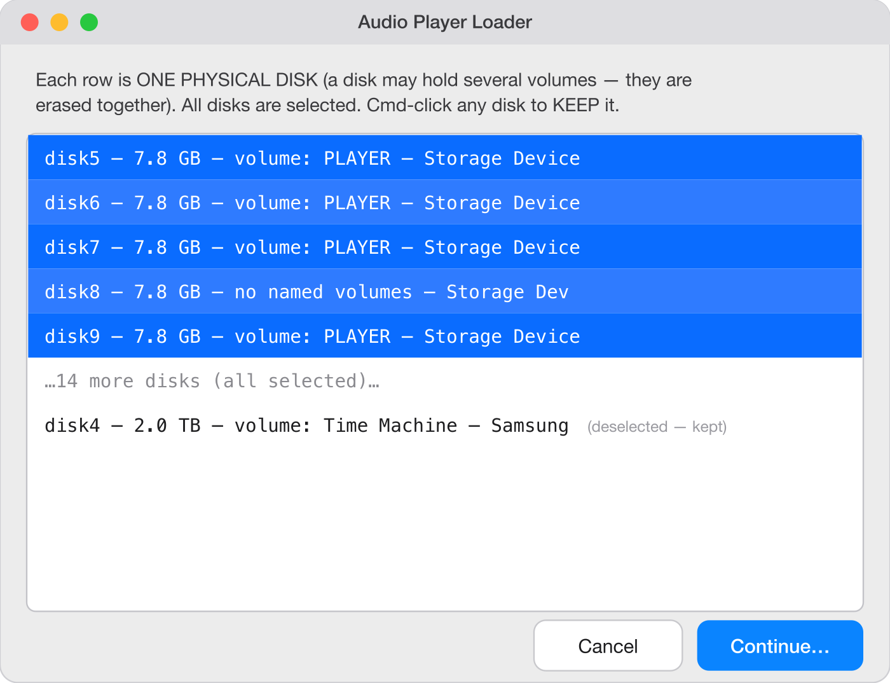
A final message shows exactly which disks will be ERASED and which will be KEPT. Read it! Then click Erase & Load (or Back to change the selection).
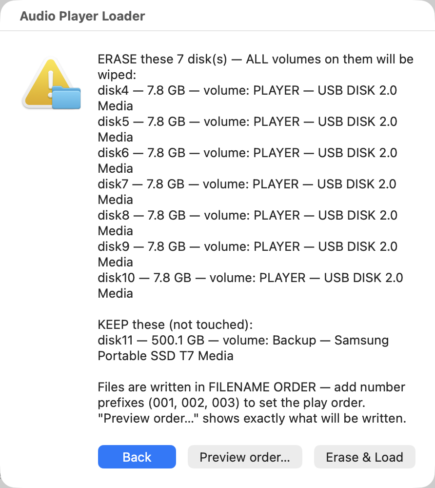
A progress bar shows overall progress and time remaining. As each device finishes you'll see a line like:
OK disk5 loaded and ejected — safe to unplugYou may unplug that device right away. The output is colour-coded — green for devices that loaded, red for failures. At the end you get a RESULTS summary grouped into GOOD CHECK REDO (see below), and a dialog asking Run again? — click it to do the next batch (or redo failures), or Done to stop.
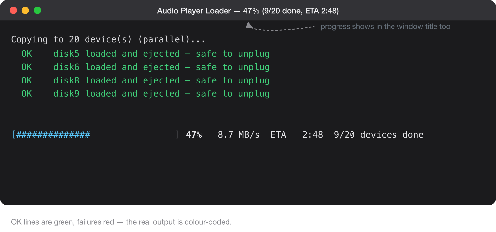
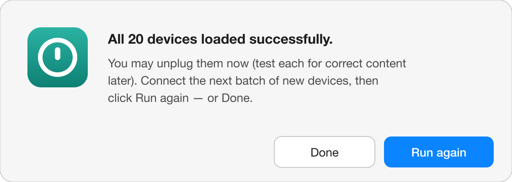
This is normal with cheap USB devices. Bad cables, loose connectors, corrosion, or humidity make some devices fail — expect it. The RESULTS summary at the end sorts every device:
| Group | Meaning |
|---|---|
| GOOD | Loaded, ejected, and safe to pull. These have dropped off the Mac, so they will not appear if you run again. |
| CHECK | The content copied fine, but something needs a look (for example it could not eject — just unplug it by hand). |
| REDO | Not loaded — retry these. They are still connected and have been renamed to "REDO", so you can spot them. |
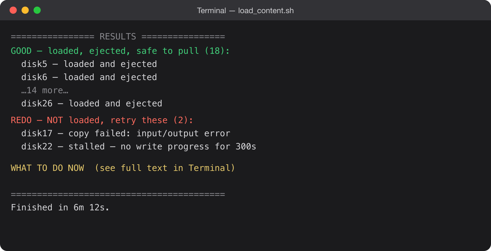
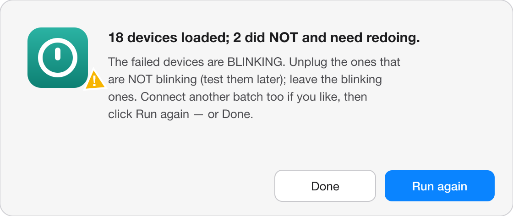
Easiest way to finish a batch: when the run ends, a dialog asks Run again? Unplug the finished devices and set them aside; leave the blinking failures plugged in (sorting details below). Add a fresh batch of devices too if you like, then click Run again. Because the finished devices have already ejected and detached, only the still-connected REDO failures — plus anything new you added — show up in the list, so it redoes just the failures. Repeat until nothing is left blinking. The same dialog appears after a successful run too — swap in the next batch and click Run again, or Done to stop.
When the run finishes with failures, the script helps you find them two ways, automatically:
1. It blinks the failed devices' lights — so leave those plugged in. A pop-up lists the failures and blinks their lights so you can spot them in the hub. Do the opposite of unplugging them: take out the devices that are not blinking and sort them into piles by their light:
Your hub now holds only the still-connected blinking devices. Plug in a fresh batch of new devices now too if you want, then click Run again — it redoes the blinking failures (and loads any new ones). Repeat until nothing blinks. Choose Done when you're finished.
2. It marks them in Finder — and macOS helps you avoid pulling the wrong one.
The failed devices stay mounted and are renamed REDO. Open a Finder
window and watch the list under your Mac's name (e.g. "Seth's MacBook Pro") as you unplug —
the only USB volumes still shown there are the failed REDO ones.
REDO device — one you meant to leave
connected. No harm done, but the warning tells you it belongs in the failures pile: put it back,
or set it aside to redo.REDO to disappear from the Finder list.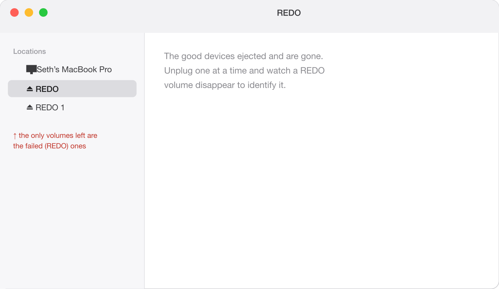
This tool cannot catch every failure. A device that fully disconnected or lost power partway through can still be reported as loaded, and a blank or half-written device is not always obvious. So test the devices — even when the run reports no failures:
| Message | What it means / what to do |
|---|---|
Skipping diskN — WRITE-PROTECTED |
That device (or card) has a hardware write-protect lock. Unlock it and run again. |
SKIPPED diskN — device changed |
A drive was plugged/unplugged after the list was shown. Nothing was erased on it. Run again for a fresh list. |
REDO diskN: stalled … |
That device stopped accepting data and was given up on. Try it again alone; if it stalls again, throw it away. |
REDO diskN: copy failed … |
The device may be faulty. Try a different hub port, or discard it. |
| A device is dark (no light) | Its battery died or it switched off mid-copy, so it failed — but it can't blink. Charge it fully first (in the sun or with a proper charging cable — the data cable/hub may not charge it), then reconnect and redo it. (A steady/solid light means it finished; still verify its content.) |
| Stopped with Ctrl+C? | The script lists which devices are INCOMPLETE. Do not hand those out — run again to redo them. |
| No disks listed | Make sure the hub is connected and powered, and the devices are fully inserted. |
| A red-icon alert pops up | The script raises an on-screen alert for the show-stoppers — no external devices found, or none could be prepared. It tells you what to check; fix it and run again. |
load_content.sh and your content folders on it and dragging that copy onto Terminal.
If you do:
Skipping diskN — it holds the source content — and it only ever reads from the
master, never formatting, writing to, or renaming it.Fastest of all is keeping your content on the Mac's own internal drive. The internal SSD reads at gigabytes per second on its own bus, so it never competes with the USB writes. A plain USB source device — even on a separate port or bus — reads far slower and can bottleneck the whole batch, because its own read speed is the limit. Use a device as the source only when you have no copy of the content on the Mac.
The loader tool itself is player-agnostic. It makes a clean, full-size FAT32 volume on each device you select and copies your numbered folders onto it in play order. It does not know or care what brand of player you own. This tab is about matching your source folder and your hardware to your specific player — the folder layout, the filenames, the audio format, and the cable or card reader that particular family expects.
The author is actively expanding the list of tested players. Where a family below is marked not yet tested, that is an invitation to try it, not a verdict against it: it will very likely work as long as you set up the source folder structure, filenames, and audio format the way that player expects. As a rule of thumb, the author expects this tool to load essentially any device that GRN/MegaVoice's SaberCopy can load, given the right folder structure and format.
Run your player through these four questions. If it clears all four, this tool can load it.
Low-cost solar audio players — the family this tool's workflow is modeled on (Hope Tech Global's own HTGv4.CMD loader). Loading a KULUMI is a plain file copy in the right order onto a FAT32 volume.
| KULUMI Mini | KULUMI X | KULUMI Sheep | |
|---|---|---|---|
| What it is | Solar lamp + audio player + FM + phone charger | Pocket solar player (IP65) | Audio player in a plush sheep (for children) |
| Loads via | Removable microSD in a USB card reader (open-slot version) or the cable | USB drive mode over the cable (no removable card) | USB drive mode over the cable (no removable card) |
| Cable / hardware | Standard USB microSD reader (easiest), or Hope Tech Global's proprietary green or red data cable | Hope Tech Global's proprietary green or red data cable | Hope Tech Global's special programming cable (a normal cable shows nothing) |
| Filesystem | FAT32 | FAT32 | FAT32 |
| Folder structure | 3 levels: category → title/album → MP3 | 3 levels: category → title/album → MP3 | 2 levels: title/album → MP3 (shallower) |
| Filenames | Numbered with leading zeros (001, 002…) so they sort in play order; plain ASCII | Numbered with leading zeros; plain ASCII | Numbered with leading zeros; plain ASCII |
| Audio format | MP3 | MP3 | MP3 |
| Verdict | Tested & verified | Not yet tested — expected to work | Not yet tested — expected to work |
Loading / programming documentation: kulumi.org/program (official loading guide, folder structure, FAT32 formatting), plus per-model pages Mini, X, Sheep.
Solar/rechargeable audio-Bible players used widely in missions. Not yet tested with this tool, but expected to work. Connect MegaVoice's SLS data cable and the player's storage — its internal memory, plus the microSD card too if one is inserted — mounts on the Mac as an ordinary writable USB drive. From there the mechanism is the same one SaberCopy uses: wipe the volume and write the files in the right order (which this tool does). SaberCopy is smarter, more customizable and friendlier, but the underlying principle is identical — so as long as you match MegaVoice's folder structure, filenames, and supported formats, this tool should load it. (The microSD is not the main path — the cable is — and where a card is used it follows the same strict structure rules as the internal memory.)
| Model | Loads via | Notes |
|---|---|---|
| Companion / Shield / Herald | SLS data cable → mounts as a USB drive (internal memory, and the card too if inserted) | Plain FAT32; expected to work. A card, where present, follows the same structure rules as the internal memory. |
| Envoy 2 (S / E series) | SLS data cable → mounts as a USB drive | No removable card on standard units, but the cable still exposes the internal memory as a writable drive. Not yet tested — expected to work. |
| Envision | Plays encrypted files only | Its storage mounts, but the firmware plays only MegaVoice-encrypted content — plainly-copied MP3s are ignored. This tool cannot prepare it; use MegaVoice's own encryptor. |
001, or 001-English); no empty primary folders.Loading / programming documentation: MegaVoice how-to guide for loading audio content, the Companion & Shield User Guide (PDF), and formatting guidance.
A solar audio-Bible player with flashlight, lantern, FM radio, and a phone-charging port. 8 GB internal flash only — no card slot. (Do not confuse it with Renew's Papyrus, a different Renew player that does have a microSD option.)
Loading / programming documentation: renewoutreach.org — Torch Audio Bible (detailed loading tutorials are behind a login; confirm the current procedure with Renew at info@renewoutreach.com). For Renew's microSD-based players, see renewoutreach.org — microSD — those load via the removable card in a reader (unlock the card's write-lock switch first).
FCBH's Proclaimer family (S100 / S50 / S25 / E10), the BibleStick, and the Micro Proclaimer are factory-loaded by FCBH before shipment. Per FCBH and the independent SIL review, "you cannot change the content on the Proclaimer. It will only read memory cards that have been pre-loaded with audio Scriptures by FCBH."
Loading / programming documentation: No user loading guide exists — these are provisioned by Faith Comes By Hearing. See the FCBH partner resources to obtain pre-loaded devices, and confirm any specifics with FCBH directly.
A hand-wind MP3 player with 1 GB internal memory plus an SD-card slot (SD up to 2 GB). GRN describes loading it as "simply connecting a USB cable to your computer and copying across MP3 files" — no proprietary cable indicated.
Loading / programming documentation: globalrecordings.net — Saber how to use and SaberCopy.
Not supported by this tool. The Audibible plays a single encrypted bundle of MP3s and other content on its SD card, built by the manufacturer's software; its firmware will not play plain, individually-copied MP3 files. Because this tool writes ordinary files, the player won't read what it produces — load these with the maker's own tooling. (Listed here so it's clear why it's an exception, not an oversight.)
Cheap, locally-available players that read directly from a microSD card or a USB thumb drive you insert. This is the tool's sweet spot: any card or stick that mounts as a writable FAT32 volume loads cleanly.
Loading / programming documentation: No single official guide exists across generic players — consult the leaflet for your specific device, and see the SIL/Scripture-Engagement review "Which Audio Player?" (Margetts, 2024) for a broad comparison.
Whatever the family, the same source-folder discipline makes a player behave. When in doubt, follow these and test one device.
001 Genesis, 002 Exodus, 003 Leviticus… so 010 does not sort before 002.01, 02, … 10, 11.